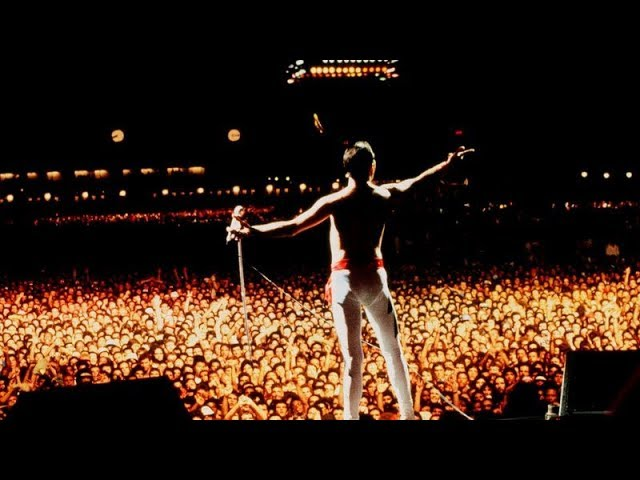
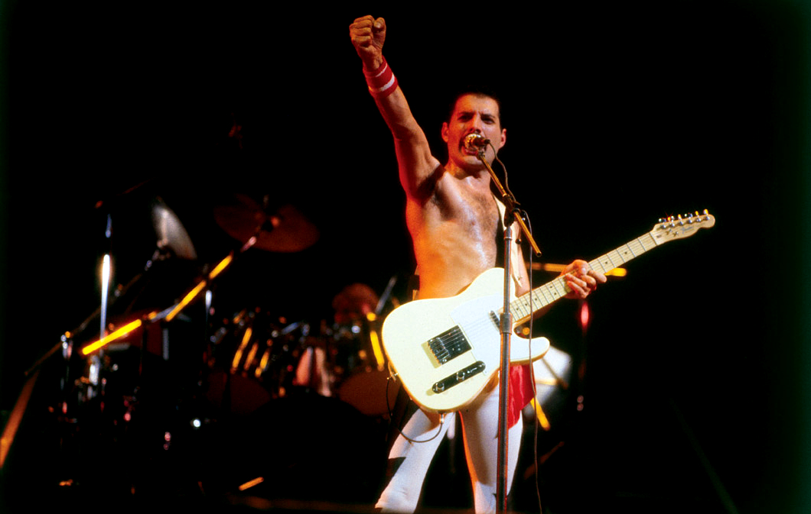

Durante cerca de quinze anos de carreira, o Queen se apresentou mais de setecentas vezes ao redor do mundo, em todos os continentes, exceto a Antártida. O quarteto foi o primeiro grupo a fazer shows na América do Sul, com datas na Argentina, Brasil e Venezuela, e também a primeira banda a se apresentar na África do Sul, uma performance polêmica ocorrida em 1984. Assim, se tornou célebre por esses e outros feitos, na época, únicos, como se apresentar para cerca de trezentas mil pessoas no Rock in Rio de 1985, e também ter realizado um concerto para oitenta mil pessoas na Hungria em 1986. A apresentação no Live Aid, em 1985 foi o maior destaque em sua história, sobretudo a presença de palco de Freddie, sempre tida como o elemento mais marcante nas apresentações do conjunto.
Mercury possuía várias marcas registradas que lhe deram notoriedade, tanto quanto a sua performance e aparência. Ao vivo, o músico cantava usando um microfone preso à metade de um pedestal, como se fosse um cetro, uma ideia que teve antes do grupo, quando seu pedestal quebrou e pensou que, daquela forma, ainda soaria útil. Quando cantava, fazia movimentos teatrais, influenciados pelo seu treinamento em ballet, e também, em todos os concertos, envolvia a plateia em uma sequência conhecida como "chamada e resposta", na qual executava algumas notas vocais e, em seguida, a plateia as imitava, permitindo que até as multidões em grandes estádios participassem. O vocalista também costumava permitir que o público cantasse partes de várias canções, principalmente a versão acústica de "Love of My Life", e também comandava acenos e palmas sincronizadas em canções como "We Will Rock You" e "Radio Ga Ga". Seu bigode, utilizado durante a década de 80, tornou-se outro de seus símbolos. Nos vocais, Brian e Roger colaboravam, com participações esporádicas de John, evidenciando a variedade de personalidades no quarteto, desde a extravagância de Taylor e a timidez de Deacon. O entrosamento entre os músicos foi um fato comentado pela mídia especializada. Em 1973, Gordon Fletcher, por meio da revista Rolline Stone afirmou: "Vamos apenas dizer que o produto [final] do baterista Roger Meddows Taylor e do baixista John Deacon é explosivo, um vulcão sônico colossal cuja erupção faz a terra tremer."
Até hoje, a crítica considera Mercury como um dos maiores artistas da história em virtude de sua presença de palco. Um repórter do The Spectator o descreveu como um artista "fora de série, chocante e charmoso com várias versões extravagantes de si mesmo". O cantor David Bowie se referiu ao frontman afirmando que "entre todos os cantores teatrais de rock, ele foi o único a levar tudo a um outro nível (...) era alguém que podia, literalmente, ter a plateia na palma da mão". Brian declarou que Freddie "conseguia fazer a última pessoa na última fileira do estádio se sentir incluída." Em uma resenha do Live Aid em 2005, um crítico escreveu que "aqueles que listam os maiores vocalistas da história costumam dar a primeira posição para Robert Plant ou Mick Jagger, mas estão terrivelmente errados, por sua performance mitológica no Live Aid Mercury era, sem dúvida, o maior de todos." A banda geralmente é tida como uma das primeiras que transformou o rock em entretenimento.